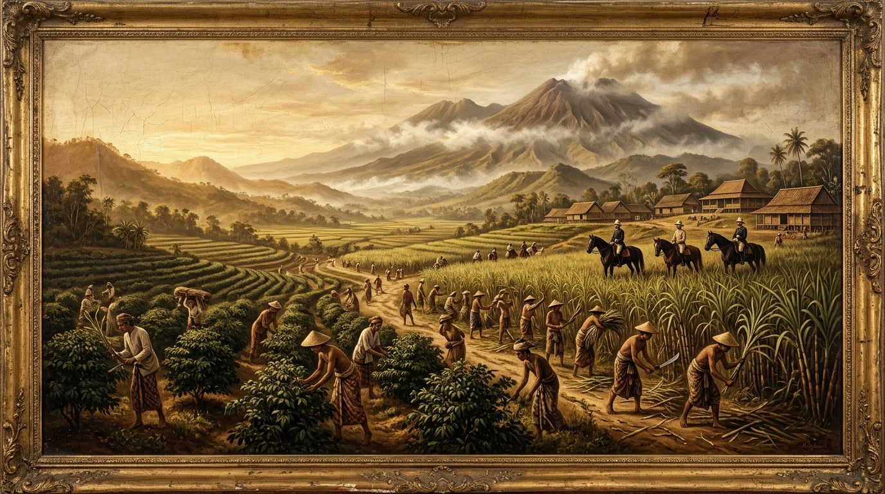
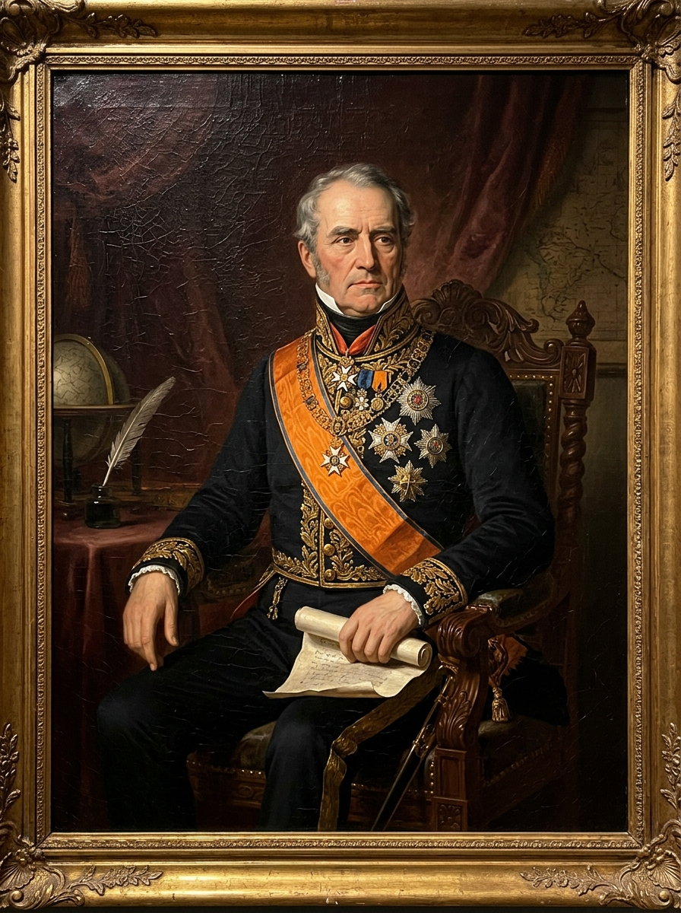
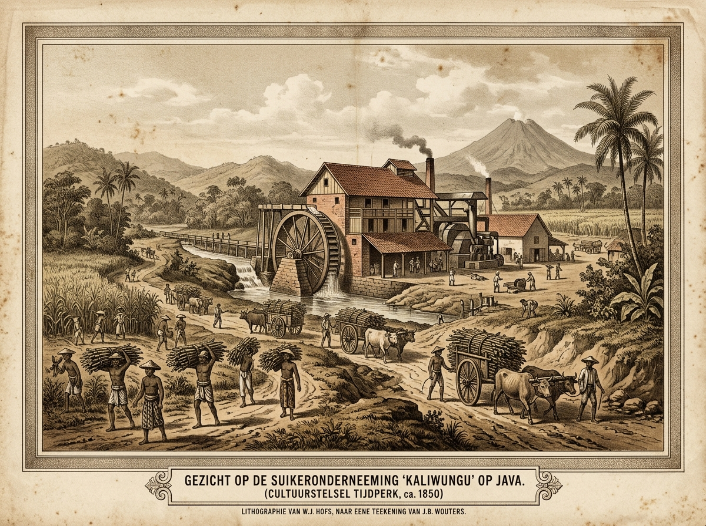

Sistem Tanam Paksa di Indonesia

"Sebuah kebijakan kolonial yang mengubah tanah, tenaga, dan kehidupan rakyat Indonesia menjadi sumber keuntungan bagi pemerintah Hindia Belanda."

Johannes van den Bosch (1780–1844), pencetus Sistem Tanam Paksa yang membalikkan beban utang monarki Belanda ke atas pundak kaum tani pribumi.
Berakhirnya Perang Jawa atau Perang Diponegoro pada tahun 1830 meninggalkan luka mendalam sekaligus kehancuran finansial total bagi pemerintah kolonial Hindia Belanda. Kas Batavia terkuras lebih dari 20 juta gulden untuk membiayai operasi militer Jenderal De Kock, sementara di Eropa, Kerajaan Belanda terancam pailit akibat pemisahan diri Belgia serta warisan utang VOC sebesar ratusan juta gulden.
Dalam kondisi terjepit itulah, Raja Willem I menunjuk Johannes van den Bosch sebagai Gubernur Jenderal dengan mandat tunggal: memeras tanah jajahan agar menghasilkan keuntungan tunai secepat mungkin. Melalui doktrin agraris yang dikenal sebagai Cultuurstelsel, rakyat pedesaan Jawa diwajibkan menyerahkan sebagian tanah sawah mereka dan mencurahkan ratusan hari kerja rodi untuk menanam komoditas ekspor bernilai tinggi di pasar dunia seperti kopi, tebu, dan nila.
Beban utang warisan VOC dan biaya Perang Jawa mengancam kelangsungan monarki Belanda.
Memanfaatkan hak feodal tradisional untuk mewajibkan tenaga kerja dan tanah rakyat sebagai pengganti pajak.
Fokus pada kopi, gula tebu, dan nila (indigo) yang mengalami ledakan permintaan akibat Revolusi Industri Eropa.
Hasil panen dimonopoli maskapai NHM dan langsung disetor ke kas negara Belanda sebagai pos surplus Batig Slot.

Enam bab untuk memahami kebijakan yang mengubah kehidupan masyarakat Indonesia.
Pilihlah dekade di bawah ini untuk mengamati dinamika lonjakan keuntungan kas Kerajaan Belanda (Batig Slot) yang berbanding terbalik secara dramatis dengan intensitas kerja paksa dan krisis pangan di tanah Jawa.
Bagaimana keringat petani di pelosok Jawa bertransformasi menjadi kepingan emas di bursa komoditas Amsterdam melalui birokrasi bupati dan armada dagang NHM.
Menyemai bibit tebu, kopi, dan nila di bawah pengawasan aparat desa dan mandor bupati.
Tanah sawah beririgasi terbaik disita untuk perkebunan kolonial, menggusur tanaman pangan padi.
Penggilingan tebu menjadi gula pasir dan perendaman daun nila dengan kerja rodi ribuan buruh.
Inspeksi mutu dan pemotongan persenan cultuurprocenten bagi para bupati dan residen Belanda.
Pemuatan peti-peti komoditas ke kapal dagang bertiang tinggi Nederlandsche Handel-Maatschappij.
Dilelang dengan harga emas; keuntungan Batig Slot melunasi utang nasional Kerajaan Belanda.